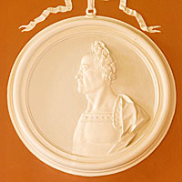
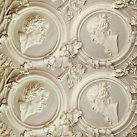

Rain waterhopper with initials of Richard Towneley and the date 1726
Vassali roundel with Roman profile
Richard Towneley (1689-1735) and Mary Widdrington (1692-1731)
This part of the building was originally created around 1620 along with the north and south tower staircases finishing with the addition of the north wing in 1626. One hundred years later the Great Hall was rebuilt as a grand entrance hall with two new fireplaces and incorporating the latest fashion of large sash windows. The main re-building work was completed in 1726 when two rainwater hoppers with Richard Towneley's initials and the year date were placed on the new Entrance Front.
The interior decoration was to take another five years. The plasterwork was carried out by two Swiss craftsmen, Francesco Vassalli and Martino Quadri and a bill for their work shows it was completed in 1731. Vassalli worked at many fine houses around England between 1724 and 1763. The decorations were usually made from moulds and the designs used repeatedly. Nine roundels of Roman profile busts at Towneley, each profile set off-centre, can be seen elsewhere in work by Vassalli. However, there were other designs used by Vassalli that are unique to Towneley.
The roundel above the entrance door is occupied by the Towneley family coat of arms with eighteen quarterings, granted by the College of Arms in 1613. In the ceiling, one at each corner, are portrait busts of Richard Towneley (1689-1735) and his wife, Mary Widdrington (1692-1731).
In the space between each of the arches supporting the ceiling is a chubby nude male child, known as a putto. Putti in Baroque art were used both as simple decoration or to provide a special meaning. Here are Towneley, four of the putti have attributes of the four elements - fire, air, earth and water. The other two putti, high above the fireplaces illustrate the story of Phaeton and Cygnus.
Visitors to Towneley in the 1730s would have instantly recognized the meaning from one of the most-read of all classical works, Metamorphoses by Ovid. The main message of the book was that everything changes. A translation, started by Dryden, was completed in 1717 and ran to another seven editions. The Towneleys owned five copies of the book including George Sandys' English version of 1640, which begins